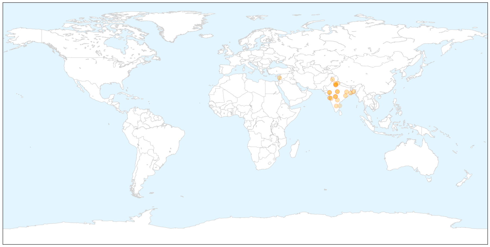

Swine Flu
30-Day Web Trend
17 alerts, 8 warnings

30-Day Twitter Trend
2 alerts, 0 warnings

Article Locations

X

Article Confidences

Top Articles:
- 1.000
- Swine flu: 1,198 people dead, number of cases cross 22,000
- 1.000
- Swine flu toll touches 1,198; number of cases crosses 22K-mark
- 0.999
- Swine flu symptoms, prevention, treatment: 17 common swine flu questions answered
- 0.999
- 10 more test positive for swine flue
- 0.999
- 84% swine flu deaths in Maharashtra this year result of late medication
- 0.999
- Hospitals don't have labs to detect swine flu in Punjab
- 0.998
- Swine flu claims 43 more lives, toll touches 1,158
- 0.998
- The deadly contours of deadly disease
- 0.998
- Swine flu claims 43 more lives, toll touches 1,158
- 0.997
- H1N1 Mutation Fear Grips State
- 0.997
- 10 more succumb to swine flu in Guj; death toll reaches 302
- 0.994
- No need to panic about swine flu: Health Ministry
- 0.990
- Swine flu bomb ticks
- 0.989
- Swine flu toll in Telangana mounts to 59
- 0.987
- Another 21 swine flu cases confirmed in city
- 0.971
- Preparation taken to prevent swine flu: Nasim - Click Ittefaq
- 0.969
- Centre assisting states on swine flu, Delhi HC told
- 0.964
- Centre assisting states on swine flu, Delhi HC told
- 0.964
- Centre assisting states on swine flu, Delhi HC told
- 0.962
- UAE warns citizens to stay away from India after swine flu spread
- 0.936
- Students, staff with cough or cold to go on leave in Goa
- 0.923
- 11 deaths due to swine flu in TN so far: Govt
- 0.917
- Panel to frame guidelines for swine flu treatment
- 0.895
- UAE warns citizens against travel to India due to spread of swine flu
- 0.781
- Five persons detected with swine flu virus in Assam
- 0.636
- H1N1 scare creates panic in Chennai school
- 0.625
- Arjun Kapoor: Sonam Kapoor Getting Better Slowly
- 0.519
- KUNA : UAE advises nat'ls against travel to India amid swine flu fears
Top Tweets:
-
No tweets found for Mar 04, 2015
Measles
30-Day Web Trend
4 alerts, 5 warnings

30-Day Twitter Trend
1 alerts, 0 warnings

Article Locations

Article Confidences

Top Articles:
- 0.986
- Measles reaches Merced County
- 0.965
- Taking Shots, Vaccine debate spikes the Tetons – Planet Jackson Hole
- 0.964
- Illinois lawmakers call for higher immunization rate in response to measles outbreak
- 0.950
- Health officials urge measles vaccinations
- 0.919
- The Developing World – The WHO’s Private Vaccine Laboratory
- 0.901
- Vaccinations Required for Calif. Day Care Center Workers Under Bill Introduced by Senator Mendoza - SB 792
- 0.850
- Many Central Coast schools vulnerable to measles outbreaks
- 0.841
- Dana Hills High School
- 0.832
- Survey: Parents increasingly ask doctors to delay vaccines
- 0.824
- 70% of Americans Think Unvaccinated Children Shouldn't Go to School: Poll
- 0.820
- Protect yourself, others by getting vaccinated · The Badger Herald
- 0.764
- Vaccines are safe, effective and life-saving for everyone
- 0.747
- Measles outbreaks lead to public health outreach
- 0.737
- DHEC: No Measles cases in SC since at least 1999 - Live5News.com
- 0.716
- All clear on Atlanta Measles case
- 0.705
- Venezuela imposes visa requirement for U.S. tourists
- 0.620
- A Parent’s Dilemma: To Vaccinate or Not to Vaccinate
- 0.617
- Archives > News > Local leaders, doctors call for vaccinations after measles outbreak
- 0.615
- Most doctors warn against postponing children's shots
- 0.612
- Big Pharma’s Mass Vaccination Agenda
- 0.606
- U.S. Health Officials Perplexed By Vaccination Skeptics
- 0.592
- Measles outbreaks turn focus to vaccinations
- 0.557
- California lawmaker pushes child care worker vaccinations
- 0.557
- California lawmaker pushes child care worker vaccinations
- 0.550
- California lawmaker pushes child care worker vaccinations
- 0.533
- 'We're all kind of frustrated' by parents who won't vaccinate kids
- 0.533
- 'We're all kind of frustrated' by parents who won't vaccinate kids
- 0.509
- California Lawmaker Wants All Day Care Workers To Be Vaccinated « CBS Sacramento
Top Tweets:
-
No tweets found for Mar 04, 2015